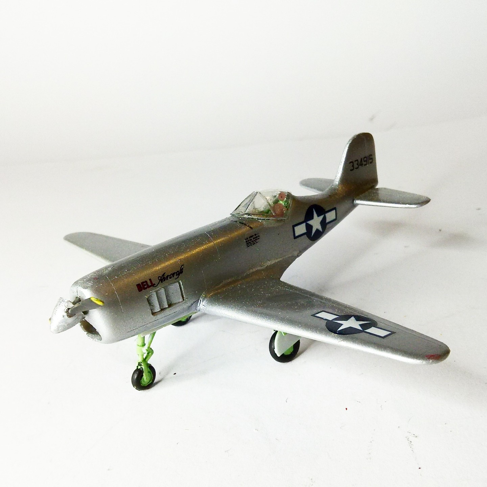
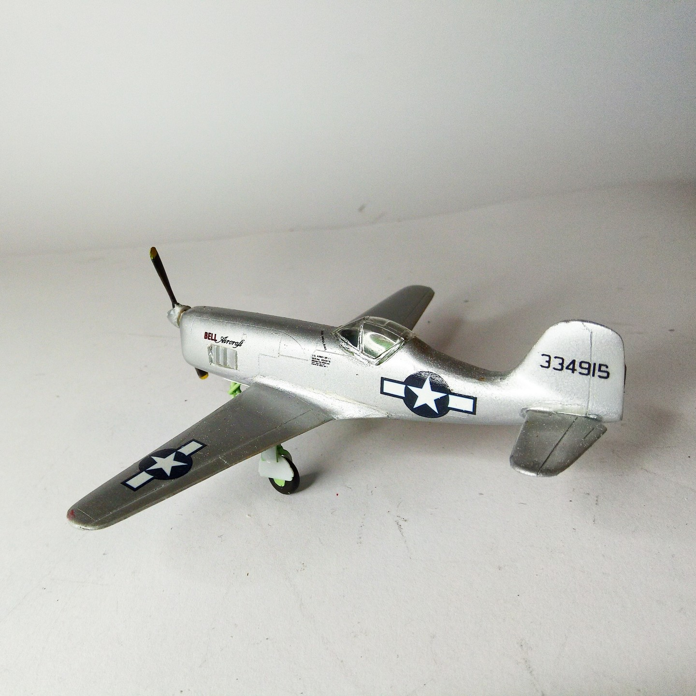

Aerei · scale model archive
Bell XP77
Bell XP77 — Kit: Special Hobby, Scale: 1/72. 43-34915 (Jack Woolams) 1944 lightweight fighter proptotype #1/72 #SpecialHobby #XP77

Photo gallery

English description
43-34915 (Jack Woolams) 1944 lightweight fighter proptotype
#1/72 #SpecialHobby #XP77
Descrizione italiana
43-34915, Jack Woolams, 1944: prototipo di caccia leggero.